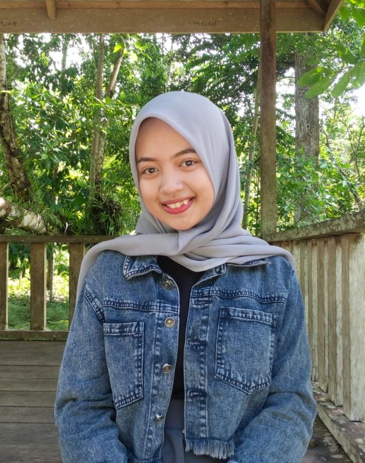

| FOTO | ||
|---|---|---|
|  | NAMA | : LULU ISTIQOMAH |
| NIM | : 163 23 088 | |
| JURUSAN | : DIII MANAJEMEN INFORMATIKA | |
| KELAS | : 1C | |
| KAMPUS | : POLITEKNIK NEGERI FAKFAK | |
| ASAL SEKOLAH | : SMA N 1 fak-fak | |
| JENIS KELAMIN | : PEREMPUAN | |
| TEMPAT/TANGGAL LAHIR | : FAK-FAK 27 JUNI 2005 | |
| TINGGI BADAN/BERAT BADAN | : 162 CM/58 KG | |
| NAMA AYAH | : RUSLI | |
| NAMA IBU | : RAHMATIA | |
| ALAMAT | :JLN.DRS KADARMAN | |
| STATUS | : MAHASISWA | |
| NO HP | : 081344851820 | |
| GMAIL | : luluistiqoma2727@gmail.com |
Hallo saya lulu yang memiliki nama lengkap lulu istiqomah, saya lahir besar fakfak paupa barat dan saya sudah berusia 19thn. saya adalah anak pertama dari ayah saya dan anak kelima dari ibu saya saya pernah bersekolah di TK yapis 1 FAKFAK di tahun 2010, lalu di tahun 2011-2016 saya bersekolah di SD Negeri FAKFAK lalu 2017-2019 di SMP Negeri 1 FAKFAK dan 2020-2023 di SMA Negeri 1 FAKFAK Dan sampai sekarang melanjutkan di POLITEKNIK FAKFAK.
Ratusan anak-anak dan balita menderita penyakit kulit yang merajalela di Gaza, kata pejabat kesehatan. Penyebabnya, kondisi mengerikan di tenda pengungsian yang menampung ratusan ribu warga Palestina. Musim panas dan runtuhnya sanitasi serta genangan limbah terbuka menyebabkan pengungsi menderita. Dokter berjuang atasi 103.000 kasus kutu dan kudis serta 65.000 kasus ruam kulit, menurut WHO.
Setelah gerakan All Eyes on Palestina ramai dibagikan oleh masyarakat seluruh dunia, aksi All Eyes on Palestina.